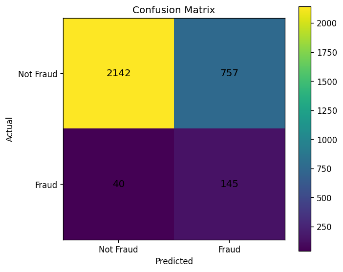
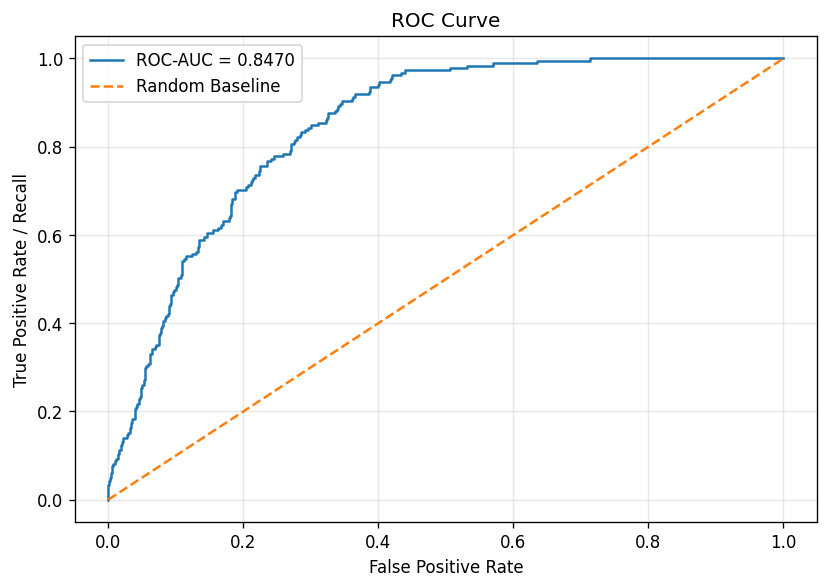
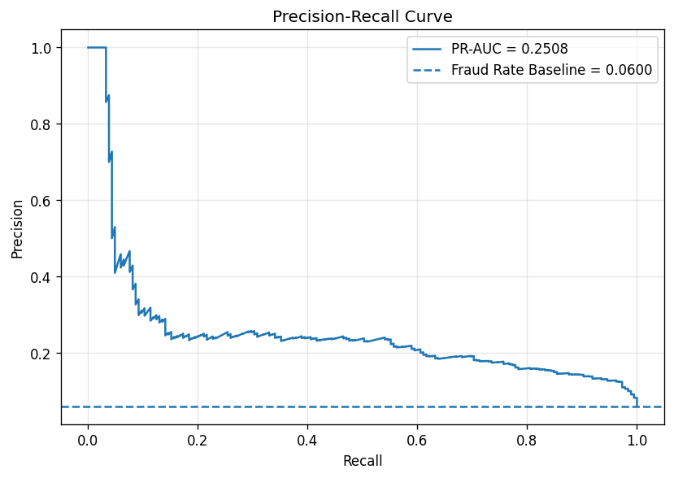

This report summarizes the first XGBoost model evaluation on the test set. Since the target is highly imbalanced, accuracy should not be interpreted alone.
| Metric | Value |
|---|---|
| Threshold | 0.5 |
| Accuracy | 0.7416 |
| Precision | 0.1608 |
| Recall | 0.7838 |
| F1-score | 0.2668 |
| ROC-AUC | 0.847 |
| PR-AUC | 0.2508 |
| Type | Count | Meaning |
|---|---|---|
| True Negative | 2142 | Not fraud claims correctly predicted as not fraud. |
| False Positive | 757 | Not fraud claims incorrectly flagged as fraud. |
| False Negative | 40 | Fraud claims missed by the model. |
| True Positive | 145 | Fraud claims correctly detected by the model. |



The current evaluation uses the default threshold:
0.5.
The next step is to run threshold tuning and compare different thresholds
based on precision, recall, F1-score, false positives and false negatives.